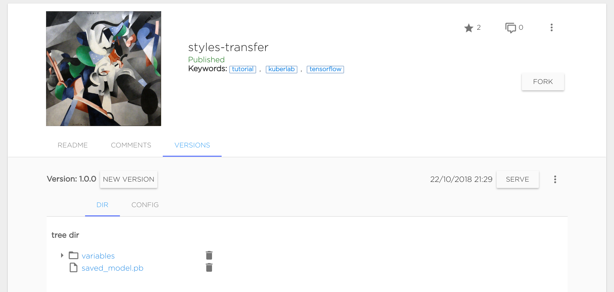
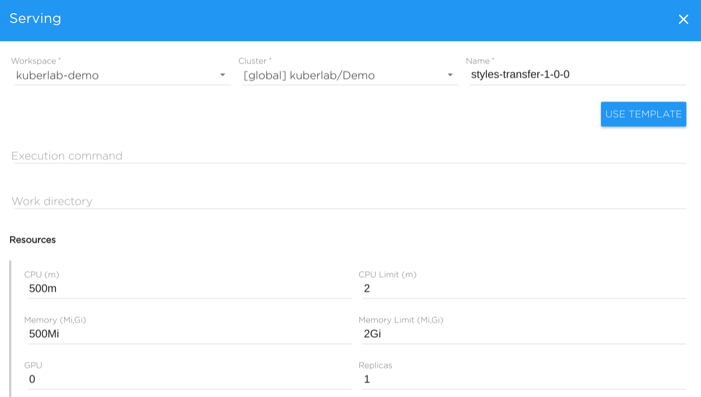
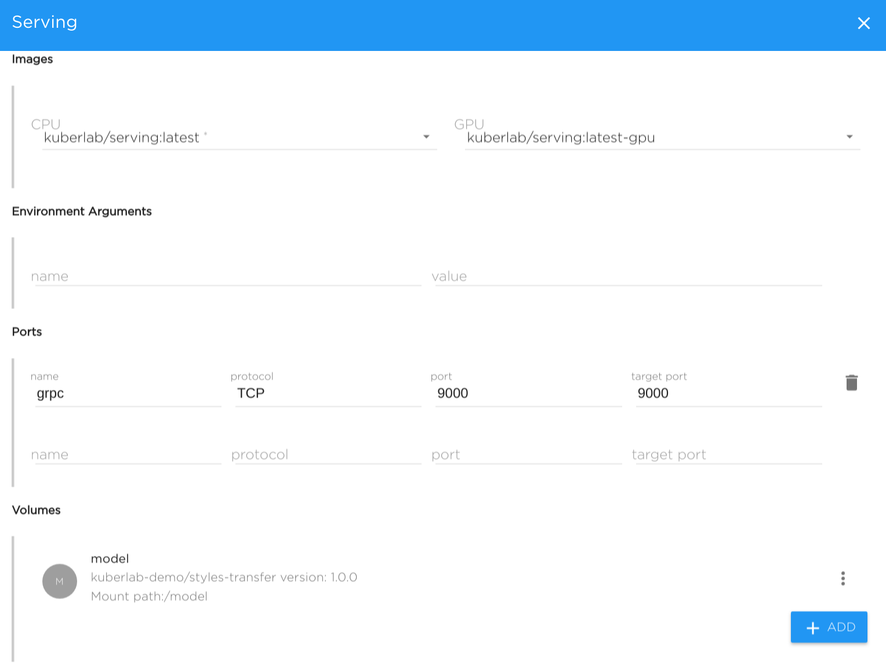
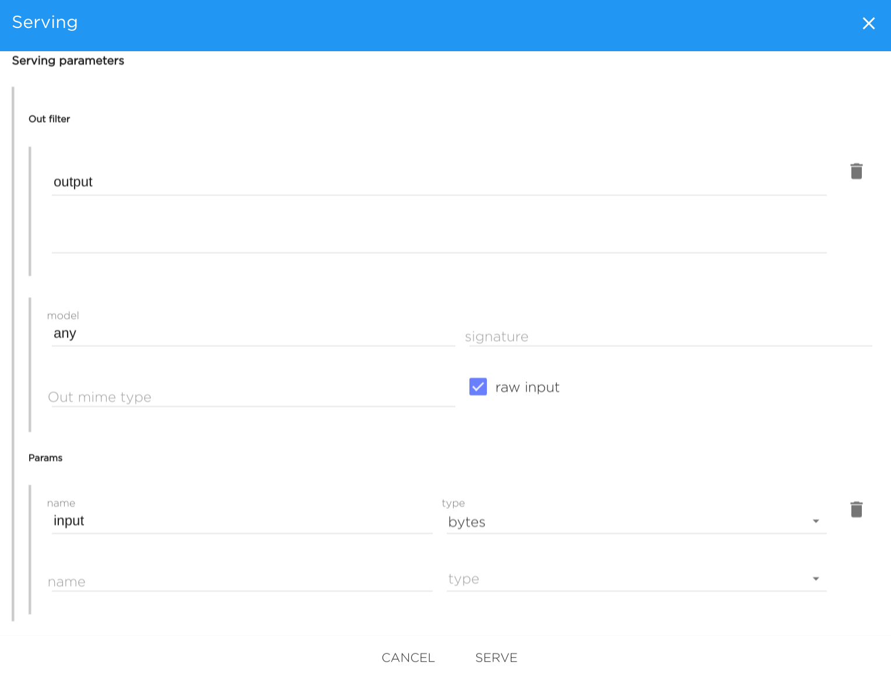

Start serving
Model Serving#
Once you have created a model and pushed it to the catalog, you will see the new model version on the Versions tab on the model view:

Now you are ready to serve the model.
Serving the model means that there will be a running TCP/HTTP server which accepts incoming requests with data in the appropriate format, runs inference with this data and give the output as the response.
To serve the model, click the Serve button near appropriate version. You will see the serving configuration form which basically specifies execution command, environment, data and resources for the serving object.
Let's see all the parameters in details.

General parameters#
- Workspace - name of workspace, where serving will be run.
- Cluster - choose cluster where serving will be run physically.
- Name - specify a name for the serving.
- Execution command - Bash execution command. Supports any bash-like constructions.
Usually, execution command for serving is a call to model runner command line tool, such as:
- tensorflow_model_server
- kibernetika-serving
For tensorflow_model_server, it may be like
tensorflow_model_server --model_base_path=<model_versions_dir> --model_name=my-model --port=9000
For kibernetika-serving, it may be like
kibernetika-serving --driver tensorflow --model-path <saved-model-dir> --port 9000
Note: For the kibernetika-serving tool description and details, see here.
- Work Directory - specifies command current directory. Usually set to one of volume directory alias - such as $SRC_DIR
Resources#
- CPU - CPU resource request (examples: 500m (0.5Core), 2 (2 Cores))
- CPU limit - CPU resource limit
- Memory - Memory resource request (examples: 512M (512 MB), 2Gi (2 GB))
- Memory limit - Memory resource limit
- GPU - Number of allocated GPUs per each replica
- Replicas - Number of replicas (basically, the number of servers)

Images#
- CPU - Docker Image used when not using GPU.
- GPU - Docker Image used for GPU
Note: For kibernetika-serving, image kuberlab/serving:latest is usually used, see kibernetika-serving document for the details.
- Environment variables - pass additional environment variables
-
Ports - specify ports which will be opened in container: name, protocol, port number
-
Volumes - TBD (See detailed description at the Volumes page)

Serving parameters#
Serving parameters only needed for the correct filling and passing parameters values from the Web UI: that is, you can pass number or string to your serving, or even upload a file (say, a picture).
-
Output filter - only specified parameter names will be returned to the UI, e.g. output - will return only output key-value in JSON.
-
Model - UI will pass the given model name to the serving (important to tensorflow_model_server-based servings).
- Signature - UI will pass the given model graph signature to the serving (applied only tensorflow_model_server-based servings).
- Output MIME Type - is specified, the UI will treat the output as this MIME type.
- Raw input - If marked, inputs sent in data key
inputsinstead of olderfeatures.
Params#
Specify a set of input parameters: their name and type. Types can be the following:
- int8
- int16
- int32
- int64
- int (basically it is int32)
- float
- double
- byte - if this specified, the form for file uploading is shown in the UI. Data is passed to the serving as byte array.
- bytes - if this specified, the form for file uploading is shown in the UI. Data is passed to the serving as an array of byte arrays containing 1 element.
- string
- uint8
- uint16
On the started serving, you can pass multiple numbers (for numeric types) separating them by commas.